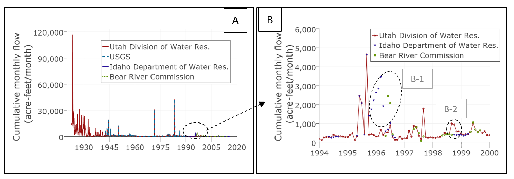
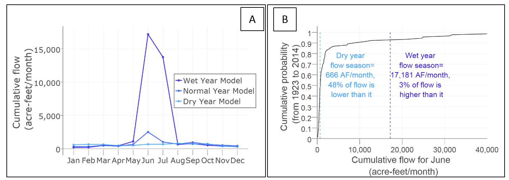

Use case 2¶
Identify and compare time series and seasonal discharge data across data sources
Example
What is the discharge at the node “below Stewart Dam” in Idaho?
Problem¶
Water supply data for systems models whether in streams or storage systems are often organized in separate and different files and require specific methods to identify and relate similar ones.
Solution¶
In this example, we identify discharge data “below Stewart Dam” in Idaho which marks the legal beginning of the Lower Bear River Division according to the Bear River Compact and has data from many sources (Bear River Commission, 1980). Here we use the controlled node instance name of “USGS 10046500 BEAR RIVER BL STEWART DAM NR MONTPELIER, ID” and the controlled attribute name of “Flow” to identify all data that exist for it in the WaMDaM database. The query returns time series and seasonal data types from five different datasets which all loaded in WaMDaM database earlier. They are reported by the states of Idaho, Utah, USGS, Bear River Commission, and the Bear River Systems Dynamics model. Each data source has its own native term for the node instance and the attribute (Table C in the Appendix).
We first discuss the time series data then we compare how well the seasonal monthly data represent flows in the site. For time series, the datasets have different aggregation statistics (e.g., cumulative monthly, average monthly or daily) and intervals and time extent. They also come in calendar and water year types. Besides the different native terms, some of them use terms that have different conceptual meaning like using the “Storage/delivered volume” in the Utah to describe the discharge. The Bear River commission only reports data from Mid-April to end of September. So April is excluded here to compare full month values.
Many of these important properties of each time series were not reported along with data values except the USGS dataset. Learning about and reporting them into WaMDaM was a laborious task that involved emailing and calling the potentially in-charge people about the metadata. Now, we use SQL to aggregate and convert all the time series data with some overlap given their different unit, year type, and aggregation statistic and aggregation interval unit (Figure 6-A). Users typically have to do these data manipulations for each study area. When they use WaMDaM, they now can reuse them for many sources. Here, the data from multiple sources complement each other, the Utah Division of Water Resources (UDWR) has the longest record and continues with other sources after the USGS sites ends in 1993. From personal communications with the Idaho Department of Water Resources, we learned that the PacifiCorp power company took over the Stewart gage after the USGS discontinued it. PacifiCorp sends the data to the Bear River Commission, Utah, and Idaho. The UDWR mentioned that the PacifiCorp measured flow before the USGS.
Many of these important properties of each time series were not reported along with data values except the USGS dataset. Learning about and reporting them into WaMDaM was a laborious task that involved emailing and calling the potentially in-charge people about the metadata. Now, we use SQL to aggregate and convert all the time series data with some overlap given their different unit, year type, and aggregation statistic and aggregation interval unit (Figure 6-A). Users typically have to do these data manipulations for each study area. When they use WaMDaM, they now can reuse them for many sources. Here, the data from multiple sources complement each other, the Utah Division of Water Resources (UDWR) has the longest record and continues with other sources after the USGS sites ends in 1993. From personal communications with the Idaho Department of Water Resources, we learned that the PacifiCorp power company took over the Stewart gage after the USGS discontinued it. PacifiCorp sends the data to the Bear River Commission, Utah, and Idaho. The UDWR mentioned that the PacifiCorp measured flow before the USGS.
Given the similarities, differences, and overlap in data as in Figure 6, a simple question here is which dataset to use as an input for water supply in a potential model. Here we discuss the differences among the datasets and offer a potential suggestion on which one to use. First, the years between 1942 and 1993 are overlapped and reported data average monthly data for the USGS and UDWR datasets. Both of them found to have the same average and standard deviation to one decimal point of 1035.8 and 2927.8 acre-feet of cumulative acre-feet per month. Note that the UDWR is orginally reported as monthly acre-feet where the USGS is reported as daily cfs. Given the accurcy of the UDWR data in comparion with the USGS in the overlappped period, we are confendent to use the UDWR for the period prior the USGS recored back to 1920.
On the other hand, there are three datasets with time series data for the period after 1993 when the USGS period ends. The three overlapping data sources seems to report the same values until their end in 2015 except the descrepency in the years 1996-1997 (Figure 1-B). Our contact at the UDWR mentioned that they use correlation where data did not exist and they are aware of some resonlable discrepancy. Our contact at the IDWR mentioned that their daily data values between October 1995 and April 1996 seemed to be in interpolated. It is unlcear what happen that year and why that is the case but the expert suggested flagging the data for potneial errors. She also suggested that small discrepancies between the three data sourcs are likely differences between preliminary and final gage data from PacifiCorp. She also pointed out that the Idaho dataset is a part of the water rights accounting program and is a tool used to help watermasters regulate the river in priority according to the water rights. She mentioned that because irrigation regulation doe not occur in that October to April time frame, it appears that the winter data was not necessarily reviewed properly. Note that out contact was not working at the IDWR during that time period. This example data descripnacy issue underscores the importance of contexual metadata that can be used to interpret data values over time. We suggest using the UDWR dataset given the confidence in its accuracy previously with the USGS dataset. The integration of the four datasets in WaMDaM is proved valuable to compare them and make an informed decision on which one to use as input to a model.
Scripts¶
| Use Case | Query | Result |
|---|---|---|
| Identify TimeSeries Seasonal Dual data | Query | Result csv |
| Identify aggregate TimeSeries Values | Query | Result csv |
| Identify Seasonal Values | Query | Result csv |
Python 2.7 script to plot figures of use case
To run the Python script, you need to be connected to the internet. The script reads its data from the csv files hosted on GitHub.
| Use Case figure | Python Script | Interactive figure |
|---|---|---|
| Figure a | script | Figure |
| Figure b | script | Figure |
 Figure 1: [A] Compiled time series data of flow at Below Stewart Dam site in Idaho as reported by four different agencies at overlapping times. [B] A snapshot of [A] that shows the similarity and discrepancy among three sources later 1994 to 2000.
For seasonal data, the BRSDM model used three scenarios for monthly flow (dry, normal, and wet) for the same site (Figure 7-A). Most of the months across the three scenarios have largely similar values except June and July as they represent the peak flow. We offer this simple comparison example that intends to improve how the BRSDM model could represent monthly peak flows given the extended flow recorded that possibly was not available to the model developers at the time. We compare how likely the dry and wet flow threshold for June as defined in the seasonal parameter to be exceeded with drier or wetter years based on the 92 years of record flow data in the UDWR dataset that spans 1923 to 2015. Using the cumulative distribution function for the flow data in June, there is 48% chance the flow will be lower than “dry” year threshold of 666 acre-ft per month with a magnitude down to 10 times lower than this max value (in June 1977 of 62 acre-ft per month). There also 3% chance the flow will be higher than the “wet” threshold of 17,181 acre-ft per month with a magnitude up to 7 times this max value (June 1923 of 117,000 acre-ft per month) (Figure 2-B). We recognize that a different value or range of the threshold could be used to define what is dry or wet for comparisons. However, we just use the simple one above as an example of the type of comparisons that are enabled as many of both time series and seasonal data types are organized in WaMDaM. We note that the method to assign the seasonal monthly values for each scenarios was not documented in the model.
Here we suggest three potential ways to improve the values of seasonal model that consider the above identified exceedance likelihood. First, keep it as is but report the percentile values as a limitation to it and the likely of exceeding it as dryer or wetter years to better inform the model results. Second, change the average dry, normal, wet values based on selected consistent percentiles. For example, select 10 percentile of dry, 50 percentile for normal, and 90 percentile for wet year. Third, add extreme condition scenarios like extreme dry of 1 percentile and extreme wet of 99 percentile. This comparison is just a one potential example that is enabled by organizing and then identifying both seasonal and time series data using one consistent method.
Python 2.7 script to plot figures of use case
To run the Python script, you need to be connected to the internet. The script reads its data from the csv files hosted on GitHub.
| Use Case figure | Python Script | Interactive figure |
|---|---|---|
| Figure A | script | Figure A |
| Figure B | script | Figure B |
 Figure 2: [A] Seasonal of average monthly flow data at Below Stewart Dam site (same site in Figure 6). Each month here applies to a wet, normal, and dry year categories irrespective of which calendar year. [B] A cumulative distribution of the all June flow data in the Utah UDWR dataset to evaluate how well the dry and wet years represent the historic record peak flows.
Existing time series data management methods like the Observation Data Model can already organize the different time series data used here. WaMDaM here can organize and compare this time series data long with other types used in water management especially seasonal data. Documenting how seasonal data is derived through metadata is a practice that WaMDaM is designed to support. One additional aspect of WaMDaM that users could benefit from is the use of Boolean values that indicate binary or dual state of node or link instance. For example, searching for the “status” controlled attribute at the same site returns that this site as in the Idaho Dataset is reported as “active” or “inactive” in the USGS dataset.
With this example to choose a controlled term for the instance name, we recognize that defining a specific and descriptive node or link instance name in a watershed, national, or worldwide could be challenging. This is because of the large number of infrastructure instances that could reach thousands or even millions. So there is a need for a robust method to name and organize a potentially growing controlled instance names. The method could benefit from the USGS convention of naming their gage stations that include the institution, site code, name and nearby town or and state.
Next¶
This use case demonstrated organizing water supply data, the next use case demonstrates organizing and comparing water demand data from multiple sources.